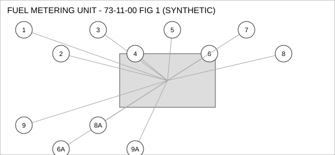
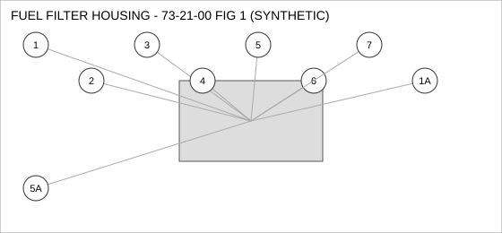
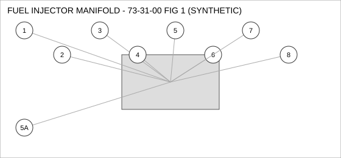

Document type: IPC | Revision: 15 | Fleet: A320
| CODE | AIRCRAFT |
|---|---|
| A | A320ceo |
| B | A320neo |
| C | A321neo |

| FIG ITEM | PART NUMBER | NOMENCLATURE | EFFECT | UPA |
|---|---|---|---|---|
| 1 | D22335247000 | NUT - SELF-LOCKING, FUEL METERING UNIT | ALL | 2 |
| 2 | D20826595800 | COUPLING - QUICK DISCONNECT, FUEL METERING UNIT | A B | 2 |
| 3 | D28981986300 | SEAL - O-RING, FUEL METERING UNIT | ALL | 2 |
| 4 | D25215339500 | SENSOR - TEMPERATURE, FUEL METERING UNIT | ALL | 1 |
| 5 | D20375727100 | SOLENOID, FUEL METERING UNIT | ALL | 4 |
| 6 | D28302447700 | ACTUATOR - LINEAR, FUEL METERING UNIT | A B | 4 |
| 6A | D20023034300 | ACTUATOR - LINEAR, FUEL METERING UNIT | A B | 4 |
| INTERCHANGEABLE WITH D28302447700 WHEN SB 73-0388 IS EMBODIED. | ||||
| 7 | D25330307100 | CLAMP - V-BAND, FUEL METERING UNIT | ALL | 1 |
| 8 | D29965194300 | FITTING - ELBOW, FUEL METERING UNIT | C | 1 |
| 8A | D21472719100 | FITTING - ELBOW, FUEL METERING UNIT | C | 1 |
| INTERCHANGEABLE WITH D29965194300 (TWO-WAY). | ||||
| 9 | D28853315800 | FILTER ELEMENT, FUEL METERING UNIT | A B | 1 |
| 9A | D21966531500 | FILTER ELEMENT, FUEL METERING UNIT | A B | 1 |
| INTERCHANGEABLE WITH D28853315800 WHEN SB 73-2217 IS EMBODIED. | ||||

| FIG ITEM | PART NUMBER | NOMENCLATURE | EFFECT | UPA |
|---|---|---|---|---|
| 1 | D25286891700 | ACTUATOR - LINEAR, FUEL FILTER HOUSING | C | 2 |
| 1A | D29294969500 | ACTUATOR - LINEAR, FUEL FILTER HOUSING | C | 2 |
| INTERCHANGEABLE WITH D25286891700 WHEN SB 73-0388 IS EMBODIED. | ||||
| 2 | D20509317000 | SENSOR - PRESSURE, FUEL FILTER HOUSING | ALL | 2 |
| 3 | D25330259900 | CONNECTOR - ELECTRICAL, FUEL FILTER HOUSING | ALL | 1 |
| 4 | D27659791600 | VALVE - SHUTOFF, FUEL FILTER HOUSING | ALL | 1 |
| 5 | D26356054100 | SOLENOID, FUEL FILTER HOUSING | C | 4 |
| 5A | D23046948700 | SOLENOID, FUEL FILTER HOUSING | C | 4 |
| ALTERNATE FOR D26356054100 AFTER INCORPORATION OF SB 73-2217. | ||||
| 6 | D26385768800 | BOLT, FUEL FILTER HOUSING | ALL | 1 |
| 7 | D23595133700 | WASHER - LOCK, FUEL FILTER HOUSING | ALL | 2 |

| FIG ITEM | PART NUMBER | NOMENCLATURE | EFFECT | UPA |
|---|---|---|---|---|
| 1 | D21116420300 | SENSOR - PRESSURE, FUEL INJECTOR MANIFOLD | ALL | 2 |
| 2 | D20593542500 | PUMP - TRANSFER, FUEL INJECTOR MANIFOLD | ALL | 1 |
| 3 | D27165863200 | GASKET, FUEL INJECTOR MANIFOLD | A | 1 |
| 4 | D23094772600 | NUT - SELF-LOCKING, FUEL INJECTOR MANIFOLD | C | 4 |
| 5 | D24745791300 | CONNECTOR - ELECTRICAL, FUEL INJECTOR MANIFOLD | ALL | 4 |
| 5A | D26507069900 | CONNECTOR - ELECTRICAL, FUEL INJECTOR MANIFOLD | ALL | 4 |
| ALTERNATE FOR D24745791300. PARTS ARE INTERCHANGEABLE. | ||||
| 6 | D29068522800 | DUCT - FLEXIBLE, FUEL INJECTOR MANIFOLD | C | 4 |
| 7 | D28224058900 | FITTING - ELBOW, FUEL INJECTOR MANIFOLD | ALL | 1 |
| 8 | D29714894800 | SWITCH - PRESSURE, FUEL INJECTOR MANIFOLD | C | 2 |